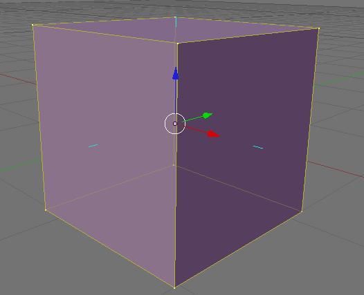
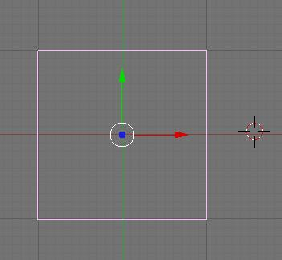
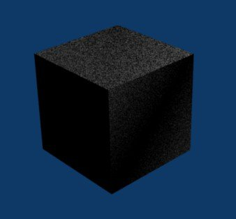
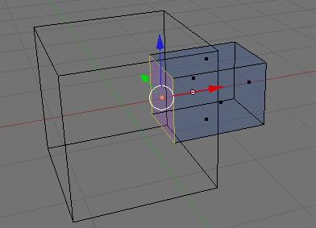
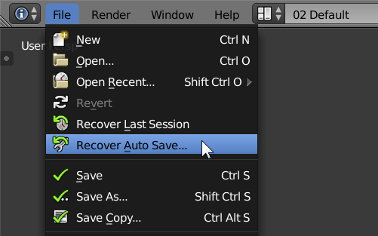
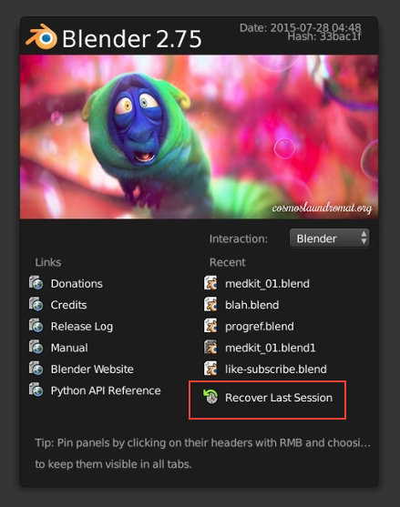
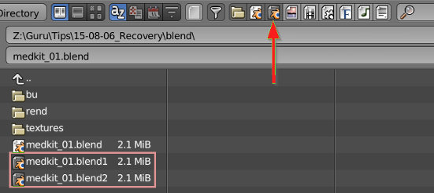

Em 3D, o vetor normal é aquele que faz 90 graus, ou seja, é perpendicular, a uma dada superfície. Por outras palavras, em 3D, um plano não é igual dos dois lados, só tem uma face (onde surge o Normal). Tipicamente, num modelo 3D as faces têm os Normals a apontar para fora.
Por vezes, as operações de edição da mesh (malha) originam a existência de faces que apontam para direções contraditórias. Numa mesh, à partida, as faces devem apontar sempre para fora (direção normal). Também é possível que todas as faces apontem para dentro. O que não deverá acontecer é numa mesma forma, por exemplo num corpo ou numa cabeça, existirem faces que apontam para dentro e outras para fora. As faces devem apontar todas na mesma direção ou poderão surgir problemas na renderização.
Se quiser ver a direção para a qual as faces estão a “apontar”, ative o painel de propriedades (N), procure o painel Mesh Display e ative a caixa Face em Normals. Passará a ver linhas azuis que apontam a direção das faces (veja o cubo em baixo).
Selecione todos os vértices, arestas e faces (utilize a tecla A) e clique em CTRL+N. Escolher “Recalculate Normals Outside”. [Atenção: em modo Object, a opção CTRL+N é para criar um novo ficheiro!]
Acontece com alguma frequência ter faces ou vértices sobrepostos. Estas praticamente só são visíveis aquando da renderização (geralmente, aparecem áreas a negro ou sombreadas...). Isto pode acontecer porque duplicou um objeto ou vértice ou face ou aresta inadvertidamente...
 Em cima, vemos dois cubos sobrepostos na janela 3D View (lado esquerdo) e o que acontece quando se faz um render com os 2 cubos sobrepostos.
Selecione todos os vértices da mesh, clique em W e escolha a opção Remove Doubles. Também pode utilizar o botão Remove Doubles no menu Tools (painel do lado esquerdo na janela 3D View) e, neste caso, pode até definir o limite de tolerância (Merge Threshold) para ser considerado “double”.
Geralmente, a mesh deverá ser oca. Não devem existir faces “internas”, desnecessárias, criando compartimentos “internos”. Estas faces, para além de criarem um esforço suplementar totalmente inútil (não vão ser vistas...) na altura da renderização, podem alterar o aspeto das superfícies afetadas.
Selecione as faces desnecessárias/internas e apague-as.
Quando o problema é "Não sei o que fiz ou o que aconteceu, só quero que Blender se comporte como das primeiras vezes que abri a aplicação!!!" a melhor solução é repor os valores de origem, ou valores de fábrica.
No menu File, escolha "Load Factory Settings".
No entanto, é importante tentar perceber o que aconteceu para não voltar cair na mesma armadilha :)
"Crashou?!?" O Blender encerrou sem aviso... "crashou". Como posso recuperar o meu trabalho?
"Encerrei a aplicação sem querer!!!" Fechei o Blender mas não gravei... Como posso recuperar o meu trabalho?
Em caso de "crash", tentar recuperar uma gravação automática através do menu File > Recover Auto Save é provavelmente a melhor opção. O Blender grava automaticamente cópias de segurança mas esta opção só é ativada depois de gravar pela primeira vez o ficheiro.
Recomendação: comece sempre por iniciar a sua sessão de trabalho com uma gravação.
Recomendação: pode configurar o número de gravações e a periodicidade (de quanto em quanto tempo são gravadas novas cópias de segurança) nas preferências do utilizador (aba File).
Sempre que encerra a aplicação é gravada uma cópia chamada quit.blend. Para aceder a esta cópia, utilize o Recover Last Session.
"Gravei em cima de um ficheiro existente!!!" Sem querer, acabei por gravar em cima de outro ficheiro... Como posso recuperar o meu trabalho?
Sempre que grava um ficheiro, o Blender inicia a gravação de cópias automáticas. Procure os ficheiros com extensão .blend1 ou .blend2 (gravações automáticas), renomeie os mesmos para .blend, abra-os no Blender e verifique o seu conteúdo. Se não quiser renomear, pode utilizar o File Browser do Blender mas não se esqueça de ativar o filtro para poder visualizar os ficheiros com as extensões de backup.
